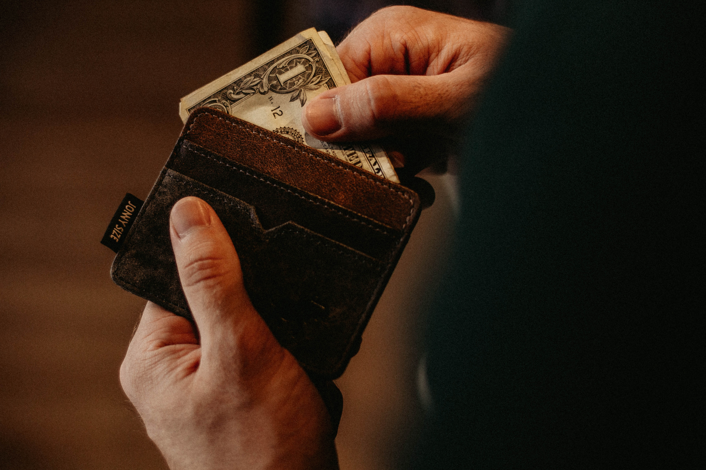

The Story
The Trump administration is getting ready to give farmers $12 billion in aid.
Why so generous?For the past few months, the US gov has been upping tariffs on other countries (think: China, the EU, Mexico, Canada) it says aren't trading fair. Countries are hitting back. And US farmers have been hit especially hard - as countries have targeted tariffs on things like meat and soy. Now the Trump admin has an idea.
Which is...?Make it rain. Yesterday, the Trump admin said it's going to pay US farmers to make up for the lost money. Here's how: either by cash, or by buying up what hasn't sold and sending it to food banks, or by teaming up with businesses to create new markets.
Trump says "Tariffs are the greatest!" and should be used toward countries that have taken advantage of the US for years. Lawmakers say that farmers don't want a bailout - they want an end to the trade war.
The farming industry has been hurtin' for certain for years now. And Trump's trade war isn't helping. This new plan is being pitched as a short-term fix. But it has many worried that it's a sign the trade war isn't going away anytime soon.